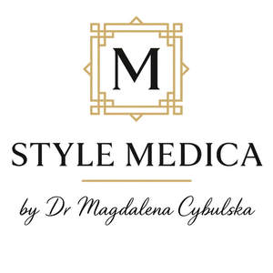

Trade Mark Journal No.2025/015 11 April 2025
UK00004182708 1 April 2025 (44)

- Class 44
- Medical consultancy services; Medical assistance consultancy provided by doctors and other specialized medical personnel; Technical consultancy services relating to medical health; Health care consultancy services [medical]; Medical consultations; Medical tele-reporting [medical services]; Medical advisory services; Medical consultation; Medical and healthcare services; Medical services; Lifestyle counseling and consultancy for medical purposes; Medical counseling; Medical counseling services; Medical clinic services; Clinic (Medical -) services; Clinic services (Medical -); Medical evaluation services; Providing medical advice in the field of dermatology; Dietetic counselling services [medical]; Medical diagnostic services; Health clinic services [medical]; Medical assistance; Medical analysis services; Medical counselling; Medical counselling services; Residential medical advice services; Medical assistance services; Medical and healthcare clinics; Medical treatment services; Medical services in the field of diabetes; Medical health assessment services; Consulting services relating to health care; Medical care services; Healthcare consultancy services; Professional consultancy relating to health care; Professional consultancy relating to health; Medical care; Medical information services; Advisory services relating to medical services; Mobile medical clinic services; Clinics (Medical -); Medical clinics; Tele-reporting (medical services); Providing medical information in the healthcare sector; Services for thepreparation of medical reports; Remote monitoring of medical data for medical diagnosis and treatment; Providing medical information in the field of dermatology; Providing medical support in the monitoring of patients receiving medical treatments; Medical care and analysis services relating to patient treatment; Health consultancy; Residential medical treatment services; Consultancy and information services relating to medical products; Physician services; Healthcare advisory services; Cosmetic treatment; Injectable filler treatments for cosmetic purposes; Cosmetic treatment for the body; Cosmetic laser treatment of skin; Laser skin tightening services; Laser skin rejuvenation services; Health screening; Health screening services; Health counselling; Health counseling; Nutrition counselling; Mental health screening services; Health clinic services; Health assessment services; Nutrition counseling; Health centres; Health centre services; Health care; Consultancy relating to health care; Consultancy services relating to health care; Provision of health care services; Advisory services relating to health care; Home health care services; Counselling relating to diet; Health advice and information services; Information services relating to health care; Health center services; Provision of health information; Provision of health care services in domestic homes; Advisory services relating to health; Health centers; Nutrition consultancy; Consultancy services in the field of nutrition; Cosmetics consultancy services; Advisory services relating to medical problems; Consultancy services related to nutrition; Advisory services relating to pharmaceuticals; Advisory services relating to diet; Pharmaceutical advisory services; Medical treatment services provided by clinics and hospitals; Medical screening; Ambulant medical care; Medical examinations; Medical examination; Medical services for treatment of the skin; Provision of medical treatment; Regenerative medicine services; Sports medicine services; Beauty therapy treatments; Consultancy in the field of body and beauty care; Medical services for the treatment of conditions of the human body; Providing health information; Providing medical information; Providing information relating to medical services; Providing health care information by telephone; Providing health information via a website; Services for the provision of medical care information; Providing information in the field of health via a website; Provision of medical information; Medical information (Provision of -); Providing news and information in the field of medicine; Providing medical information from a web site; Medical information; Information relating to health; Individual medical counseling services provided to patients; Medical examination of individuals; Healthcare; Arranging of medical treatment; Health-care; Microneedling treatment services; Microdermabrasion services; Cellulite treatment services; Skin care salons; Cosmetic treatment for the face; Cosmetic facial and body treatment services; Cosmetic treatment services for the body, face and hair; Medical information services provided via the Internet; Beauty care for human beings; Telemedicine services; Healthcare services; Health-care services; Clinics.
Style Medica Ltd.